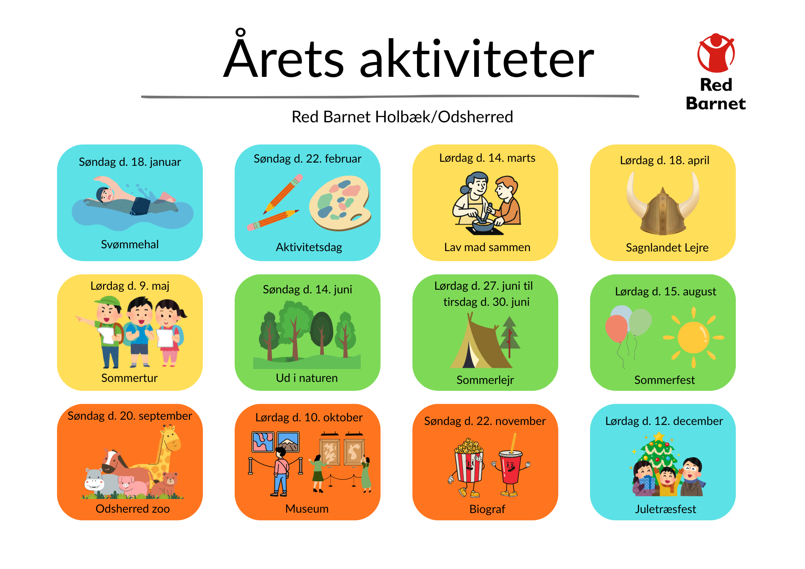
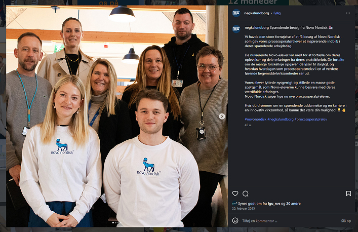

Nyuddannet multimediedesigner med fokus på UX, SoMe-content og datadrevet digital markedsføring.
Mine projekter
Årshjul for familieaktiviteter
Red Barnet Holbæk/Odsherred

Som kommunikationsansvarlig i Red Barnet Holbæk/Odsherred havde jeg til opgave at udvikle et visuelt årshjul, der gav familier et klart og trygt overblik over årets fælles aktiviteter.
Webdesign af hjemmeside for Valby IF
KEA studieprojekt
Vi lavede en ny hjemmeside til idrætsforeningen Valby IF og producerede billeder og videoindhold.
Instagram opslag
Studiepraktik NEG Kalundborg

Jeg var ansvarlig for Facebook- og Instagram-opslaget med fokus på at promovere samarbejdet mellem NEG og Novo Nordisk.
Redesign af hjemmeside for Lelop.dk
KEA studieprojekt
Vi redesignede Lelops hjemmeside fra kaotisk til en mere overskuelig og brugervenlig løsning.
Digital make-over af NEG Kalundborgs website
KEA eksamensprojekt

Mit afsluttende eksamensprojekt som multimedieddesignstudernede redesignede jeg selve interfacet, lavede content og udarbejde en ny informationsakitektur samt UX-testede med bruger
MMD afsluttende projekt for NEGKompetencer
- UX / Brugeroplevelse ⭐⭐⭐⭐☆
- Content Creation ⭐⭐⭐⭐☆
- Figma ⭐⭐⭐⭐☆
- Kreativ problemløsning ⭐⭐⭐⭐☆
- Digital markedsføring ⭐⭐⭐☆☆
- Video & Motion ⭐⭐⭐☆☆
- Research & Analyse ⭐⭐⭐☆☆
Kompetencerne uddybes gennem cases i mit portfolio.
Hvem er jeg?
Jeg er et unikum af en nørd, der lider af kronisk overbegejstring med kreativitet og ideer.
Jeg er lykkeligt forlovet med min bedste ven og stolt kattemor med hjem i Holbæk.
I min fritid elsker jeg computerspil, kampsport, lange ture og madlavning.
Jeg er nysgerrig og elsker at omsætte viden til kreative løsninger.
Kontakt mig
Har du spørgsmål eller vil starte en samtale?
Ræk ud, jeg
glæder mig til at høre fra dig!